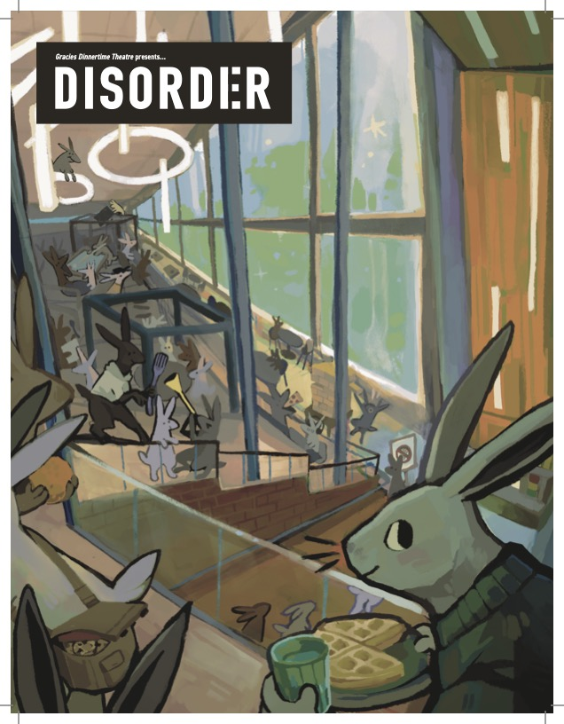

Gracies Dinnertime Theatre presents: "Disorder"
GDT's first and only four-color, glossy magazine. Probably collectable. Limited numbers. Why not get one?

GDT's first and only four-color, glossy magazine. Probably collectable. Limited numbers. Why not get one?